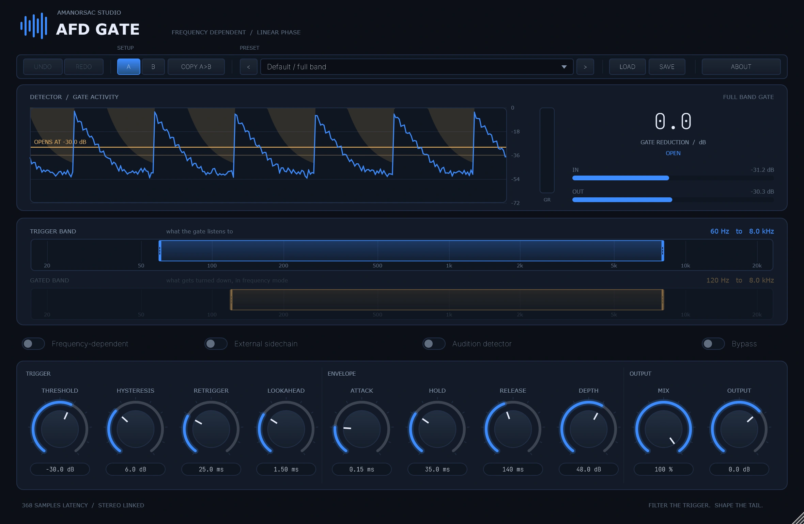
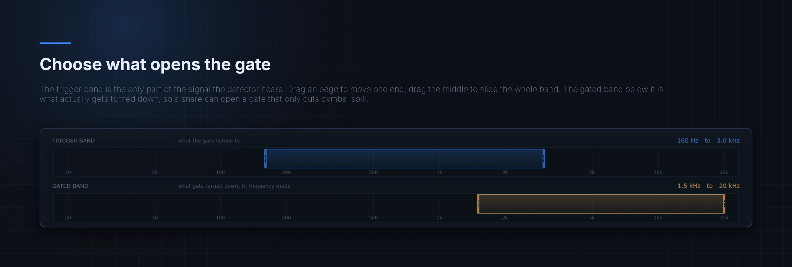
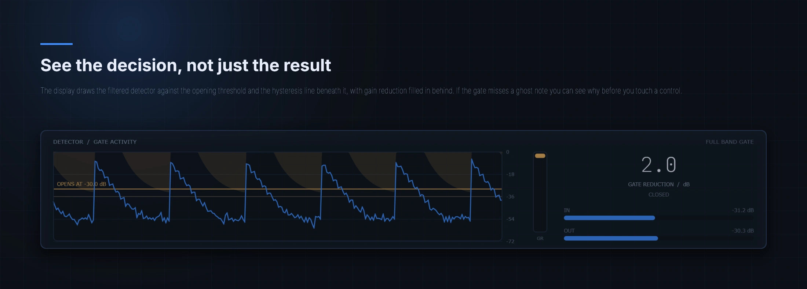
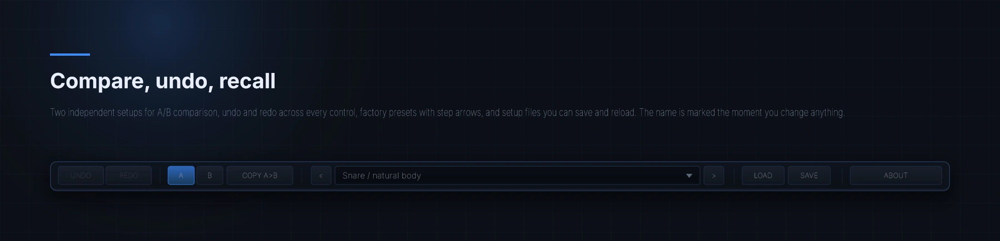
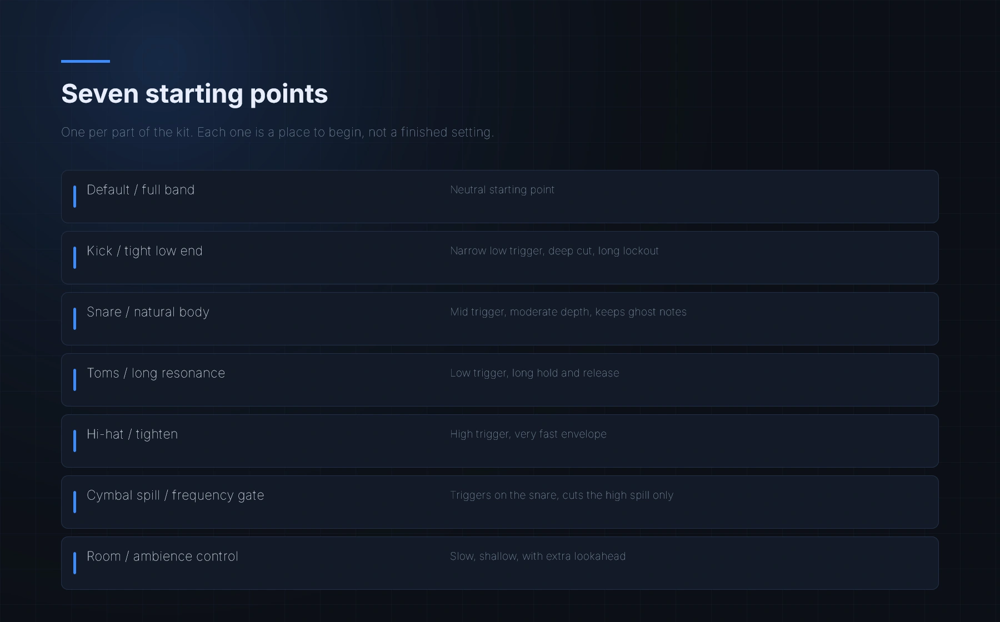
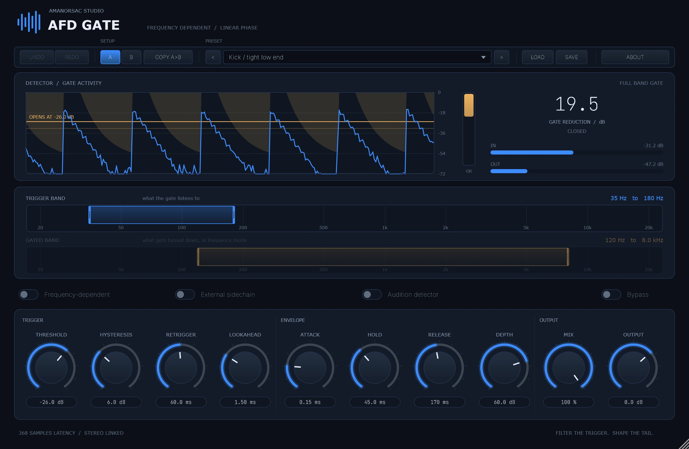
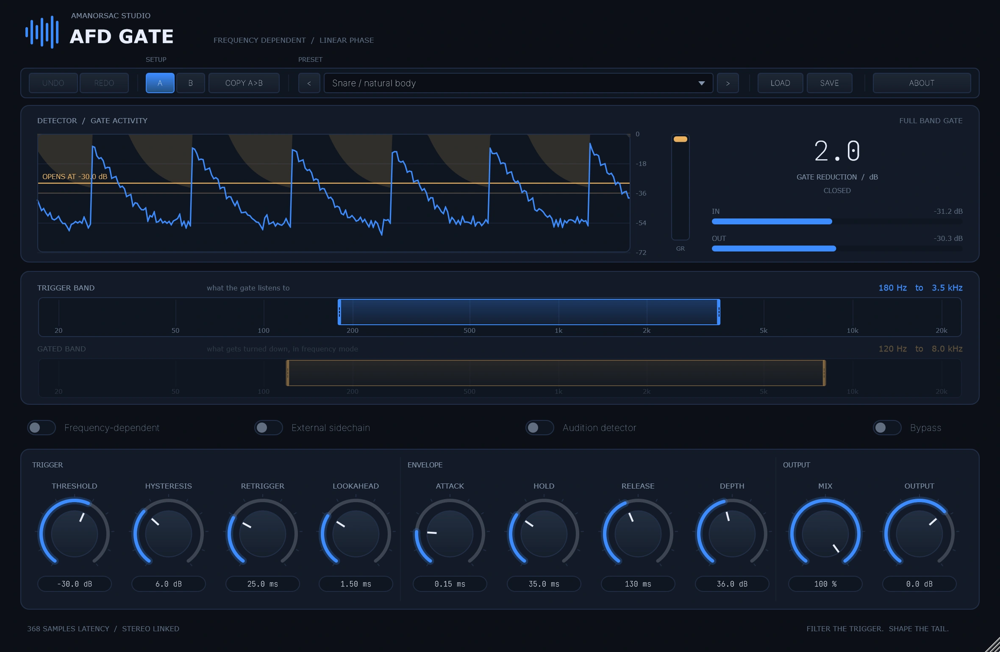
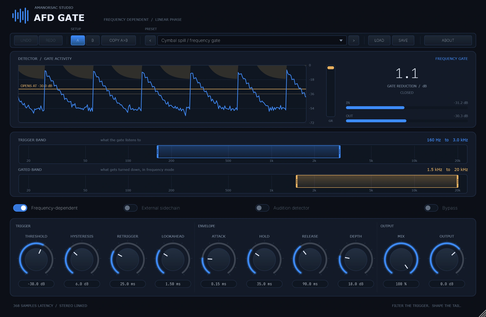

Filter the trigger. Shape the tail.
AFD Gate, the Amanorsac Frequency Dependent Gate, is a linear-phase gate for close-miked drums. Drag one band to choose what the detector listens to, and another to choose what actually gets turned down — so a snare hit can open a gate that only cuts cymbal wash. A decibel-domain envelope keeps tails even, lookahead preserves transients, and a retrigger lockout stops buzz and wash from flapping the gate.
$12 once · version 1.3.0 · runs offline with no activation, ever

The full interface · the detector trace, the two band selectors, and everything that shapes the envelope
Why it exists
On a close-miked kit that is the wrong shape of tool. The snare mic hears the hats. The tom mics hear everything. A gate that ducks the whole channel takes the room with it, and what you get back is a kit that sounds like it was assembled rather than played.
AFD Gate splits the two decisions apart. One band decides when the gate opens. A different band decides what gets turned down. A snare can open a gate that only cuts cymbal wash, and the snare body never moves.
The trigger band is the only part of the signal the detector hears. Drag an edge to move one end, drag the middle to slide the whole band, double-click to reset. The gated band below it is what actually gets turned down, so a snare can open a gate that only cuts cymbal spill.

The display draws the filtered detector against the opening threshold, with the hysteresis line beneath it and gain reduction filled in behind. If the gate misses a ghost note you can see why before you touch a control.

Two independent setups for A and B, undo and redo across every control, factory presets with step arrows, and setup files on disk. The preset name is marked the moment you change anything, so you always know whether you are still on it.

Attack and release are time constants smoothed in the decibel domain, so a release travels the same number of decibels per unit time from the start of the tail to the end, instead of collapsing at the front. Hold bridges the gaps between hits, hysteresis stops the gate chattering at the threshold, and retrigger locks out a re-open after a close.
Lookahead delays the detector less than the audio, so the gate is already open when a transient lands. The latency reported to the host does not change with the setting.
An external sidechain bus takes the decision from another track, and falls back to the track's own signal when the bus is absent.
Listen to the filtered detector on its own. It is the fastest way to know whether the band you picked is actually hearing the drum or the thing beside it.
Presets
Kick, snare, toms, cymbal spill and the rest, each with the bands already in a sensible place. Step through them with the arrows without letting go of the mouse.

The same plugin, three jobs



Specifications
| Formats | VST3 and standalone, Windows x64 |
|---|---|
| iOS | The iOS target compiles in CI and produces both the container app and the AUv3 extension. It is not released — never signed, never built for a device, never loaded by a host. |
| Channels | Mono or linked stereo, with an optional stereo sidechain bus |
| Latency | 128 samples of band-split group delay plus 5 ms, reported to the host |
| Detector | Two-pole band-pass, 12 dB per octave each side, 20 Hz to 20 kHz |
| Band split | 257-tap Blackman-windowed linear-phase complementary pair |
| Sample rates | Tested at 44.1, 48, 96 and 192 kHz |
| Threshold | -72 to 0 dBFS, depth 0 to 80 dB |
| Envelope | Attack 0.01–30 ms, hold 0–250 ms, release 5–1500 ms |
| Lookahead | 0 to 5 ms, with no change to reported latency |
| Interface | Resizable. The size is stored with the session. |
| Network | None. It runs offline, with no telemetry and no activation. |
Two things worth saying plainly, because they are the ones that get checked: the linear-phase band split reconstructs the input exactly when the gate is open at unity, and the plugin passes pluginval at strictness level 10 with no warnings.
The build is not code-signed yet, so SmartScreen shows a blue box saying it protected your PC. That is Windows not recognising a new publisher, not Windows finding a problem with the file.
Click More info, then Run anyway.
$12Once, and that is all
Twelve dollars, and once it is yours it simply runs: offline, with no key to type, no server to reach and nothing phoning home. You buy it here because that is where the download lives, not because the plugin will ever ask who you are.
How it works